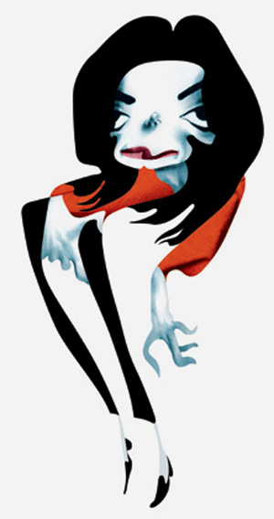
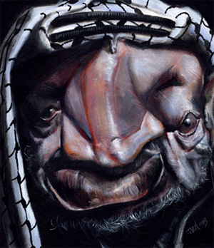
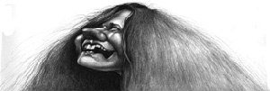
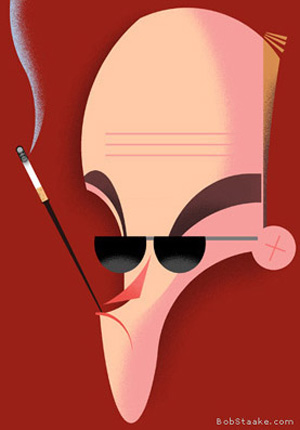
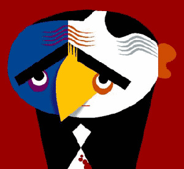
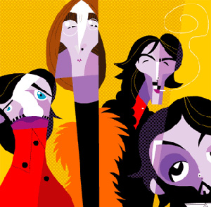
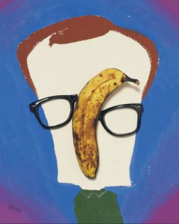
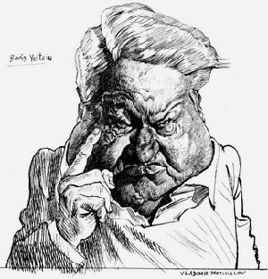
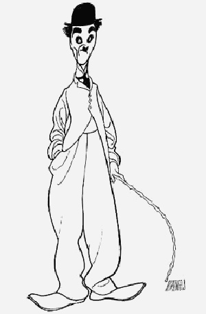
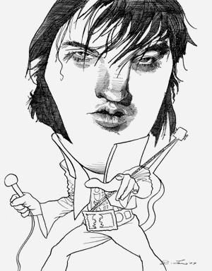

ЖУРНАЛЬНЫЙ ПОРТРЕТ
Чем кривее, тем лучше
Я должен предупредить: у меня довольно специфические представления об иллюстрации. В каких-то вопросах я, может быть, чересчур принципиален, а чего-то могу не понимать, например, как многие художники считают творческим актом обрисовку фотографии.
По этому вопросу я когда-то даже сцепился с известным художником Дмитрием Врубелем, как раз этой технологией прославившимся, после чего он, говорят, ненадолго запил — молодежь, мол, не поняла. Нет, правда, я именно не понимаю, как человек, избравший рисование своей профессией, может себе в таком удовольствии отказывать, и вдобавок лишать нас, зрителей, возможности этого самого удовольствия причаститься. Мы ведь, зрители, я имею в виду, так это чувствуем. Каким бы высоким образованием художник ни обладал, какой бы замысловатой ни владел техникой, хорошую работу от плохой отличает, на мой взгляд, только одно — удовольствие, с которым она нарисована.
Поэтому так греют души работы иных примитивистов. Позволю себе дать коллегам совет, которому сам хотел бы научиться следовать: если, прошу прощения, не прет,- отложите. Сходите выпейте кофею, поспите, прогуляйтесь. Иначе вы лишитесь второго главного удовольствия из доступных художнику: разглядывать старые работы. Нет ничего унылее, чем работа, сделанная на автомате. Нет ничего хуже, чем полностью перейти в автоматический режим.
На самом деле я хотел поговорить про вполне конкретную вещь — про журнальный портрет. Где, собственно, чаще всего обрисованные фотографии и встречаются, как наиболее удобный способ добиться сходства. Отмечу, очень, очень переоцениваемый. Притом, что рисовать похоже совсем несложно, поверьте. Особенно для журналов, где чаще всего (даже в самых серьезных) требуется некоторое количество гротеска — иначе, опять же, ничего не мешает поставить фотографию или, например, коллаж.
Все люди, как известно, разные, и каждого, раз увидев, вы в следующий раз безошибочно узнаете в толпе (другой вопрос, сможете ли вспомнить, как зовут). Не так уж часто везет нарисовать Де Голля — тут достаточно обозначить соответственно нос, мешки под глазами и квадратную кепку — или Наполеона в треуголке и с рукой за лацканом — но всегда найдется что-то характерное, что-то, на чем можно заострить внимание.
Поэтому потрет — или, может быть, в данном случае более уместно слово шарж или карикатура, как угодно,- это достаточно условное занятие, требующее в первую очередь внимания. Примерно как рисовать какую-нибудь схему проезда, например: это — направо, это — налево, это — близко, это — далеко, и т.д. Причем чтобы зритель понял, что именно вы хотите ему показать, нужно не просто нарисовать близко или широко посаженные глаза, а соответственно свести их в одну точку или наоборот, развести за уши. Это, конечно, необязательно, но помогает. Всегда можно сделать портрет поспокойнее. В какие цвета раскрасить и какими деталями снабдить такую схему — дело второе.
Это, в общем, царствующая нынче за границей концепция журнального портрета: чем кривее, тем лучше. Весьма эффективная, на мой взгляд.
Вот, например, Андре Каррильо. Этот доводит к собственно гротеску еще и фотошоповский дисторт — весьма ловко, впрочем.


Очень известный и довольно неприятный художник Jan Op De Beeck

Дженис Джоплин
Такого рода художников на свете тысячи, кому интересно ройтесь вот тут, например, и дальше у каждого практически художника по странице ссылок.
Замечательный, а то великий Bob Staake (у него, правда, не так много портретов)

Хантер Ц.Томпсон

Судя по пятнам на галстуке, Аль Капоне
его эпигон Пабло Лобато (которому, в свою очередь (в конечном итоге все это дело восходит, если хотите, вообще к Пикассо), приходится эпигоном в.п.с.)

Можно было бы, кстати, подобрать примеры из одних битлов вот, например, вот и вот. Ну и вот (остальное тут). Или из Вуди Аллена — его тоже очень любят отчего-то (станете рыться по ссылкам — увидите).
Вот, кстати, нашелся прекрасный человек: Hanoch Piven (еще у него прекрасный Ельцин, но одного нам, думаю, хватит).

В нашем отечестве тоже, разумеется, есть свои монстры, и первый из них Владимир Мочалов:

Cвоего сайта у него нет, но довольно много всего висит вот здесь, здесь и здесь. Кукрыниксов и Бориса Ефимова, дай бог здоровья, я себе позволю оставить за кадром, и в историю углубляться не буду. Но, если не говорить о глубоких корнях, то очень многим современная журнальная портретная графика (и на западе, и тут) обязана человеку по имени Al Hirschfeld

На сайте работы разложены по десятилетиям, начиная с двадцатых годов и до 21го века — в 2003м он, к сожалению, умер. И еще один мастодонт 26-го г.р., David Levine.

Ну и хватит на сегодня, пожалуй.